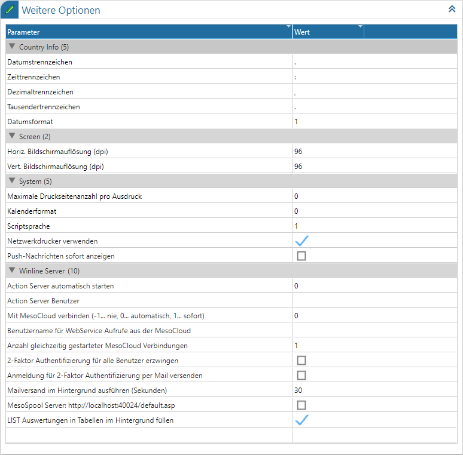

Das Register "WinLine Server" ist nur in der "WinLine mobile" anwählbar. Genau für diesen Programmbereich können in der Tabelle spezifische Parameterwerte gesetzt werden.

Bereich "System"
Ø Netzwerkdrucker verwenden
Grundsätzlich werden in der mobile WinLine Ausgaben, welche auf den Drucker geschickt werden, als PDF-Datei an den Client gesendet. Dadurch kann der Client die Ausgabe direkt, z.B. über einen angeschlossenen Bluetooth-Drucker ausdrucken oder mailen.
Ist hingegen der Druckmechanismus der CWL gewünscht, so kann die Option "Netzwerkdrucker verwenden" aktiviert werden. Hierdurch werden die Ausdrucke - wie in der CWL - entweder zum Spooler oder zum eingestellten Drucker am Server geschickt.
Hinweis
Die Einstellung, ob am Drucker oder in den Spooler gedruckt wird, kann nach Aktivierung der Option "Netzwerkdrucker verwenden" in der Druckersteuerung (WinLine START - Datei - Drucker) per rechten Maustaste definiert werden (Funktion "Ausgabe des Ausdrucks auf den Spooler" bzw. "Ausgabe des Ausdrucks auf den Drucker"; der gerade aktive Eintrag wird angezeigt), wobei die Speicherung bei Anwahl des Buttons "Ok" stattfindet.
ü Ausgabe des Ausdrucks auf den
Spooler
Das Spoolfile des mobile WinLine-Benutzers liegt entweder im Benutzer
Client-Verzeichnis oder im CWL Serververzeichnis darüber (jeder Benutzer hat wie
in der CWL "sein" Spoolfile, das "S<Benutzernummer>F01.SPL" lautet).
ü Ausgabe des Ausdrucks auf den
Drucker
Für die Ausgabe wird der eingestellte Drucker aus der client.config
oder bei nicht vorhandenem Clientverzeichnis aus der Datenbank geholt.
Existieren die Einträge dort auch nicht werden die Einträge aus der
server.config verwendet. Wird nirgends ein Eintrag für den Drucker gefunden,
wird das Dokument wieder als PDF an den Client gesendet.
Wird der Drucker
gefunden, so wird das mesospool.exe mit dem zu druckenden Dokument und den
Druckereinstellungen aufgerufen. Das bedeutet, die mesospool.exe startet zwar im
CWL Serververzeichnis, die dort vorhandene mesoprint.ini wird aber nicht
verwendet, sondern es werden die notwendigen Angaben als Parameter an die mobile
WinLine übergeben.
Hat der Drucker die "Client"-Checkbox aktiviert (diese
Option befindet sich in der zweiten Tabellenspalte des Fensters
"Druckersteuerung"), dann wird ebenfalls nicht gedruckt, sondern die Ausgabe
erfolgt dann auch wieder als PDF zum Client.
Hinweis - Speicherung
Die Einstellung wird in die "client.config" gespeichert (wenn vorhanden) oder in der Datenbank, wenn nicht vorhanden. An dieser Stelle ist es empfehlenswert, die Einstellungen in der client.config nach dem Speichern zu kontrollieren.
ü Ausgabe des Ausdrucks auf den
Spooler + Option "Netzwerkdrucker verwenden" ist
aktiviert
company:printer=20
ü Ausgabe des Ausdrucks auf den
Drucker + Option "Netzwerkdrucker verwenden" ist
deaktiviert
company:printer=30
Bereich "WinLine Server"
Ø Action Server automatisch starten
Durch Aktivierung dieser Option wird beim Start des WinLine Servers, welcher in der Regel via Windows Dienst ausgeführt wird, auch der Action Server gestartet. Der Action Server läuft hierbei im Kontext des WinLine Servers, d.h. wird nicht extra im Windowsumfeld darstellt.
Hinweis
Nähere Informationen können dem Kapitel Action Server entnommen werden.
Ø Action Server Benutzer
An dieser Stelle kann der Standard-Benutzer für den Action Server hinterlegt werden. Da die Abarbeitung der Aktionen im Kontext des WinLine Servers stattfinden, muss es sich hierbei um einen WinLine mobile Benutzer (ggfs. mit Administrationsrechten) handeln.
Ø Mit MesoCloud verbinden (-1… nie, 0… automatisch, 1… sofort)
Mit dieser Einstellung kann gesteuert werden, ob bzw. wie die Verbindung mit der MesoCloud hergestellt werden soll. Damit die Daten von der MesoCloud mit der lokalen WinLine abgeglichen werden können, muss die Verbindung vorhanden sein.
Wenn also mit der MesoCloud gearbeitet wird, muss die Einstellung auf "0… automatisch" gestellt sein. Wenn die Option "1… sofort" ausgewählt wird (wenn vorher "-1… nie" eingestellt war), wird auch gleich der WinLine Server neu gestartet.
Weitere Informationen entnehmen Sie bitte dem White Paper zum Thema "MesoCloud".
Ø Benutzername für WebService Aufrufe aus der MesoCloud
Der Datenabgleich mit der MesoCloud wird über die WebServices durchgeführt. Hier muss der Benutzer hinterlegt werden, mit dem der Import durchgeführt werden soll (der Benutzer erscheint dann z.B. im CRM-Schritt, der importiert wurde oder der Benutzer steht als "Benutzer letzte Änderung" im Stammdatensatz). Über die Autovervollständigung kann nach allen Benutzern gesucht werden, der Benutzermatchcode steht an dieser Stelle aber nicht zur Verfügung. Ist kein Benutzer hinterlegt, so kann der WebService nicht durchgeführt werden.
Achtung
Der Benutzer, der hier hinterlegt wird, muss als "MWL-Benutzer" und - sofern auch mit CRM gearbeitet wird - auch "CRM-Benutzer" sein. Zusätzlich ist darauf zu achten, dass der Benutzer auf sämtliche, im Zusammenhang mit der MesoCloud, verwendeten Vorlagen und Workflows und Aktionsschritte die Berechtigung besitzt. Ist das nicht der Fall, werden entsprechende Fehlermeldungen erscheinen.
Hinweis 1
Wenn hier kein Benutzer eingetragen ist, und eine MesoCloud-Verbindung hergestellt wird, dann wird automatisch der Benutzer "FLPCloudUser" angelegt, mit dem dann die Kommunikation durchgeführt wird.
Der Benutzer ist in der WinLine nicht verwendbar und man kann sich mit diesem Benutzer auch nicht in der WinLine anmelden. Dieser Benutzer wird beim Prüfen der WinLine mobile Benutzerlizenzen nicht mitgezählt, d.h. der Benutzer funktioniert auch wenn keine WinLine mobile Benutzer Lizenzen vorhanden sind (für den MesoCloud Service).
Hinweis 2
Weitere Informationen sind dem White Paper zum Thema "MesoCloud" zu entnehmen.
Ø Anzahl gleichzeitig gestarteter MesoCloud Verbindungen
Hier kann eingestellt werden, wie viele parallele Sessions gestartet werden sollen, damit die Nachrichten effizienter von der MesoCloud geholt werden können. Es sind maximal 10 Verbindungen erlaubt Der Standardwert steht auf "1".
Achtung
Wie viele Verbindungen eingestellt werden, hängt vom verwendeten Server (der Hardware) ab, bzw. auch von der Menge des Datenverkehrs, der über die MesoCloud abgewickelt werden soll. Dabei ist zu beachten, dass jede CloudServer-Verbindung zugleich eine komplette WinLine Server-Benutzer-Session darstellt.
Hinweis
Weitere Informationen sind dem White Paper zum Thema "MesoCloud" zu entnehmen.
Ø 2-Faktor-Authentifizierung für alle Benutzer erzwingen
Durch das Aktivieren dieser Checkbox ist für alle WinLine mobile Benutzer die Nutzung der 2-Faktor-Authentifizierung (2FA) Pflicht.
Hinweis
Für die detaillierte Beschreibung der 2-Faktor-Authentifizierung steht ein separater Eintrag in der WinLine Hilfe bereit.
Ø Anmeldung für 2-Faktor-Authentifizierung per Mail senden
Diese Checkbox ermöglicht es, die generierten Informationen für die erstmalige Authentifizierung an der 2FA-App via E-Mail zu versenden.
Hinweis 1
Für den Versand der E-Mail müssen die entsprechenden SMTP-Mailabsender-Adressen in der Benutzeranlage der WinLine-Benutzerkonten hinterlegt worden sein. Weiterhin bedarf es einer ordnungsgemäßen Einrichtung hinsichtlich der SMTP-Servereinstellungen in den Parametereinstellungen der WinLine START im Register "Mail".
Hinweis 2
Für die detaillierte Beschreibung der 2-Faktor-Authentifizierung steht ein separater Eintrag in der WinLine Hilfe bereit.
Ø Mailversand im Hintergrund ausführen (Sekunden)
Wenn bei dieser Funktion ein Wert in Sekunden hinterlegt wird, so wird der Mailversand der gespeicherten SMTP-Mails in der angegebenen Frequenz automatisch im Hintergrund versendet. Dieser Wert ist im Standard innerhalb der CWL auf 0 gesetzt, da diese Automatik bereits jede 30 Sekunden (im Standard) über den WinLine Server geschieht, sofern dieser gestartet bzw. im Einsatz ist.
Wenn hier ein Wert innerhalb der CWL eingetragen wird, dann wird jede gestartete WinLine dieser Installation im angegebenen Intervall die Mails versenden. Die Option innerhalb der CWL darf nur bei Einzelplatzinstallationen eingestellt werden.
Hinweis 1
Nachdem ein Wert innerhalb der CWL eingetragen wurde, muss das Programm einmal neu gestartet werden, damit die Änderungen greifen und der Mailversand über einen Thread der CWL läuft. Die Option innerhalb der CWL darf nur bei Einzelplatzinstallationen eingestellt werden.
Hinweis 2
Diese Option ist unabhängig der CWL-Einstellung innerhalb der WinLine mobile (WinLine Server) im Register "WinLine Server" in den Einstellungen gesondert einzustellen. Dort ist der Standardwert 30 hinterlegt, somit werden jede 30 Sekunden die gespeicherten SMTP-Mails versendet, sofern der WinLine Server gestartet ist.
Ø MesoSpool Server: http://localhost:40024/default.asp
Bei Aktivieren der Checkbox bereits wird im Hintergrund die mesospool.exe gestartet, wobei in der server.config der folgende Eintrag gesetzt wird:
ü mesospoolserver=http://localhost:40024/default.asp
Der Port kann manuell in der server.config angepasst werden. Der Eintrag selbst kann beim Druck von Belegen, die über den WebService importiert worden hilfreich sein, sofern in den Belegen sehr lange RTF-Texte vorhanden sind. Bei nicht aktivieren kann es dazu kommen, dass die RTF-Texte nicht vollständig ausgedruckt werden.